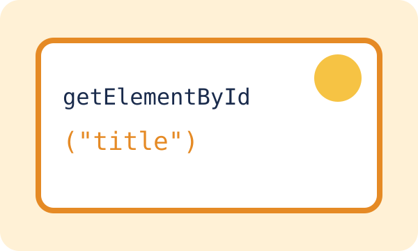
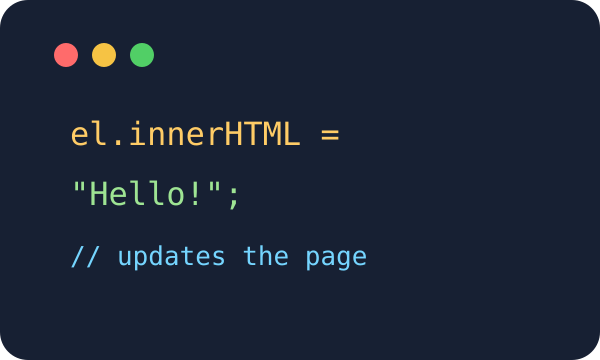

Find an element
getElementById() finds one element by its ID. querySelector() uses a CSS selector.
JavaScript uses the DOM to change text and styles, add or remove elements, and respond to clicks without reloading the page.

getElementById() finds one element by its ID. querySelector() uses a CSS selector.

| Method | What it does | Example |
|---|---|---|
| getElementById | Finds an element by ID | Change a heading |
| querySelectorAll | Finds all matching elements | Style all cards |
| addEventListener | Listens for an event | React to a click |
JS Basics and JS DOM pages.
HTML Basics and HTML Advanced pages.
CSS Basics and CSS Layout pages.